A complete, illustrated walkthrough of the drill platform — for surveillance agents, pit managers, supervisors, and department heads. Every screen shown here is the live application.
Version 1.0 · Illustrated with live screenshots
Prepared for the Surveillance & Pit training program. Audience: Agents · Pit Managers · Supervisors · Directors · Casino Manager • Access: assetdrills.com
Contents
Welcome to A.S.S.E.T.
What the platform is for · Who uses it · Roles at a glance
Signing In
Employee ID login · Password rules · Lockout · Changing your password
Your First Login — the Guided Tour
The Drill Portal (Agents & Pit Managers)
Dashboard · Running a Drill · Your Results · Practice Mode · Skill Trainers · Resources · My History · Pit Operations
Scorecard · Audit Digest · Remediation · User Management
Tips, Shortcuts & Excel Exports
Roles & Access — Quick Reference
Troubleshooting & FAQ
▸ How to read this manual
Screenshots use a demonstration data set (fictional names such as “Sam Trainee” and IDs like Z-01). Your own screen will show your real team. Blue Tip, purple Note, and amber Important boxes call out the things worth remembering.
1
Welcome to A.S.S.E.T.
A.S.S.E.T. — Aruba Surveillance Skill Enhancement & Training — is the department’s web-based drill platform. It keeps your payout math, game-protection knowledge, and floor procedures sharp through short, scored gaming drills, and gives supervisors and directors a clear view of team readiness.
What you do here
Run drills — 10-question scored sessions drawn from seven casino games plus shared floor procedures.
Practice freely — unlimited, unscored practice with instant feedback, including dedicated skill trainers.
Track progress — scores, accuracy, weak areas, and your monthly certification status.
Who uses it
The platform serves two departments that never see each other’s data (the “department wall”): Surveillance and Pit. Everyone signs in the same way; what you see afterwards depends on your role.
Role
Portal
What they do
Agent (Surveillance)
Drill portal
Runs drills, practice, and trainers; tracks own progress.
Pit Manager (Pit)
Drill portal
Same drills as agents, labelled “Pit Operations”.
Supervisor / Shift Manager
Management portal
Views team performance and reports; can create & edit questions.
Director (Surveillance head)
Management + Admin
Everything a supervisor sees, plus Scorecard, Remediation, Audit Digest, and User Management.
Casino Manager (Pit head)
Management + Admin
Same head tools as the Director, scoped to Pit staff.
◆ The department wall
Surveillance staff and Pit staff never appear in each other’s dashboards, leaderboards, reports, or audit records. Questions, games, and resources are shared; people and their results are not.
2
Signing In
You log in with the Employee ID and password your administrator handed you — there is no public sign-up and no email required.
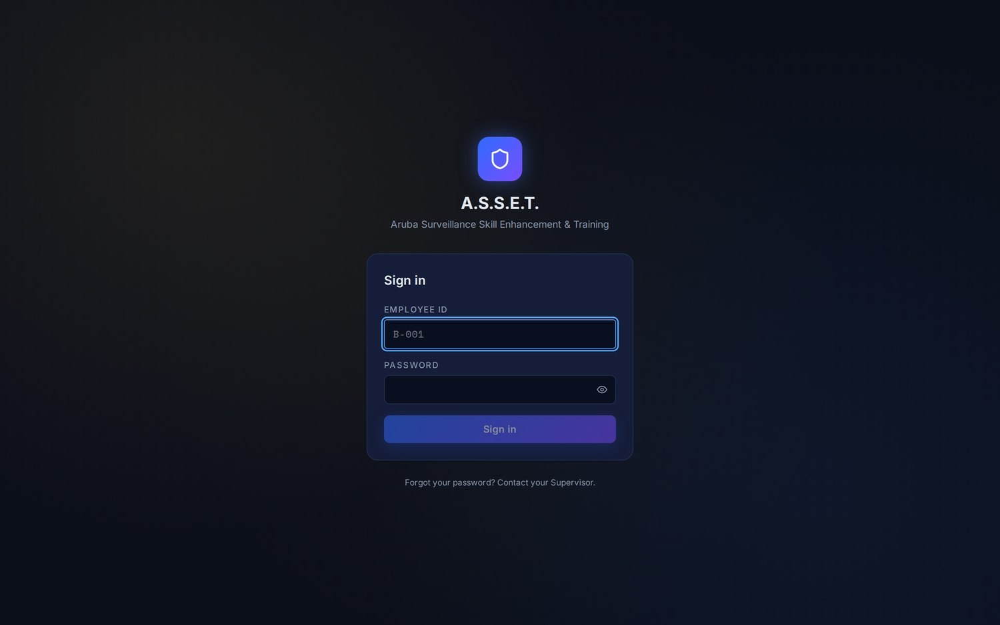
Figure 2.1 — The sign-in screen. Enter your Employee ID (for example B-24) and password, then select Sign in. The eye icon reveals the password as you type.
Open assetdrills.com in any modern browser (works on desktop, tablet, and phone).
Type your Employee ID exactly as issued — it is not case-sensitive.
Enter your password and select Sign in. You land on your Dashboard automatically.
▲ Important — account lockout
After 5 failed attempts within 15 minutes the account is temporarily locked. Wait for the window to pass or ask your supervisor. Forgot your password? There is no self-service reset — “Forgot your password? Contact your Supervisor.” A head can set a new one for you in seconds.
Changing your own password
Once signed in, open Change Password from the sidebar (under Help). Enter a new password — the change is immediate and needs no approval.
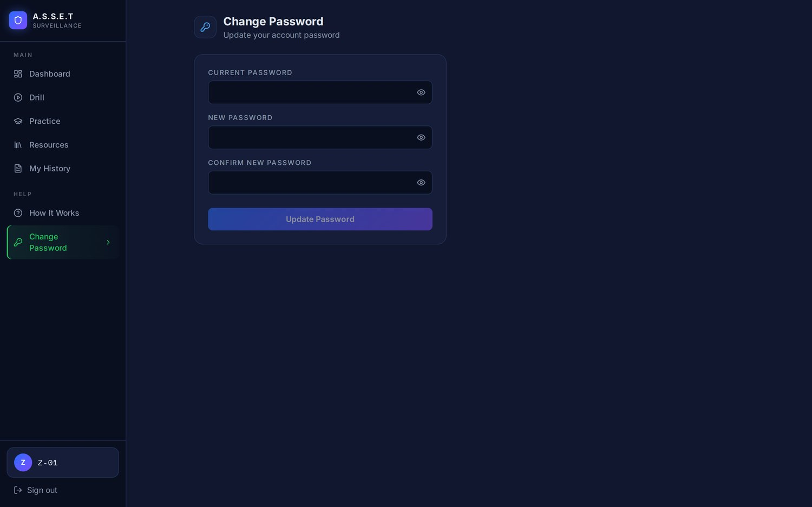
Figure 2.2 — The self-service Change Password page. Available to every drill-taker from the sidebar.
▸ Automatic sign-out
For security the app signs you out after 30 minutes of inactivity. A department head can also force-log-out an active session; if that happens you’ll be returned to the login screen within about a minute.
3
Your First Login — the Guided Tour
The very first time an agent or pit manager signs in, a short five-step tour explains the essentials before the first drill. You can move with Next/Back, and it only appears once.
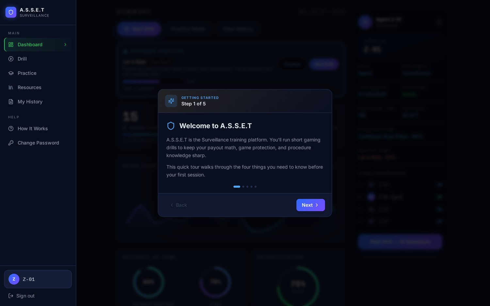
Figure 3.1 — Step 1 of the welcome tour. The five steps cover what drills are, the 4-hour cooldown, the scoring multiplier, and monthly recertification. Re-read it any time under How It Works.
▸ Tip
If you skipped through the tour and want a refresher, the sidebar’s How It Works page repeats all of it — scoring, cooldown, and certification rules — on one screen.
4
The Drill Portal
This is what agents and pit managers use every shift. The left sidebar is your map: Dashboard, Drill, Practice, Resources, My History, plus How It Works and Change Password under Help.
4.1 The Dashboard
Your home screen summarises where you stand right now: sessions completed this month, your rolling average score, cooldown state, per-game accuracy, recertification progress, and how you rank against your team.
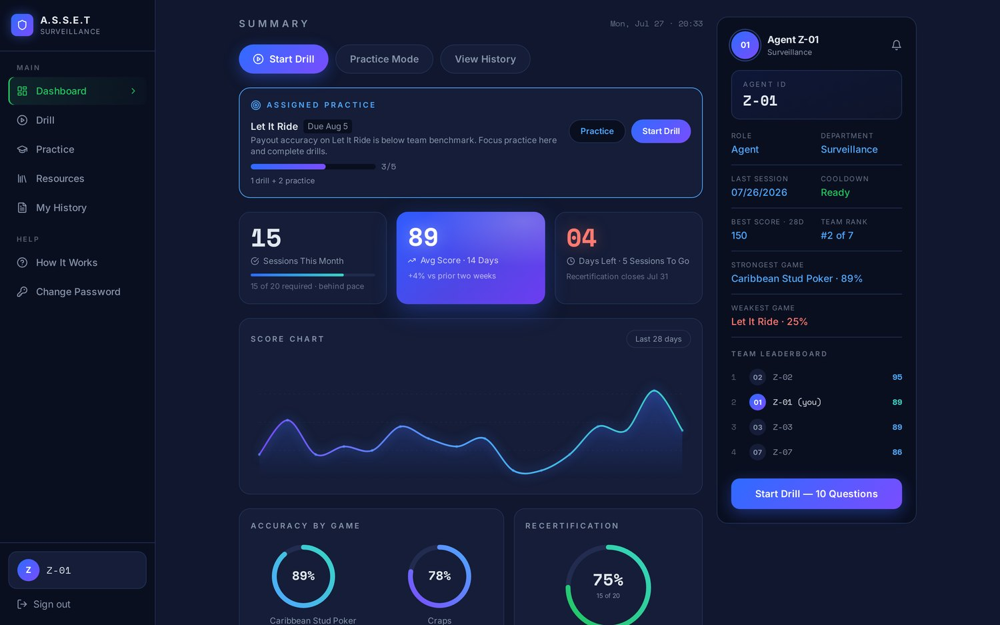
Figure 4.1 — The agent Dashboard. Left: Start Drill, Practice Mode, and View History shortcuts, session counts, score chart, and accuracy rings. Right: your ID card with strongest/weakest game, recertification progress, and the team leaderboard.
On the Dashboard
What it tells you
Sessions This Month
Progress toward the 20-session monthly requirement.
Avg Score · 14 days
Your recent form. Unlocks a trend line once you have a few sessions.
Days Left / Cooldown
Days remaining in the recert window and whether you can drill now.
Accuracy by Game
Rings showing how you’re doing per game — your weakest game is flagged.
Team Leaderboard
Your rank within your department (Surveillance or Pit only).
◆ Assigned Practice
If a supervisor has given you a focus area, an Assigned Practice card appears at the top of the Dashboard with a Practice button (jumps straight to that game) and a Start Drill button. See §7 (Remediation).
4.2 Running a Drill
A drill is a 10-question, 10-minute scored session drawn from across all games and shared procedures. Faster, accurate sessions score higher (see §5).
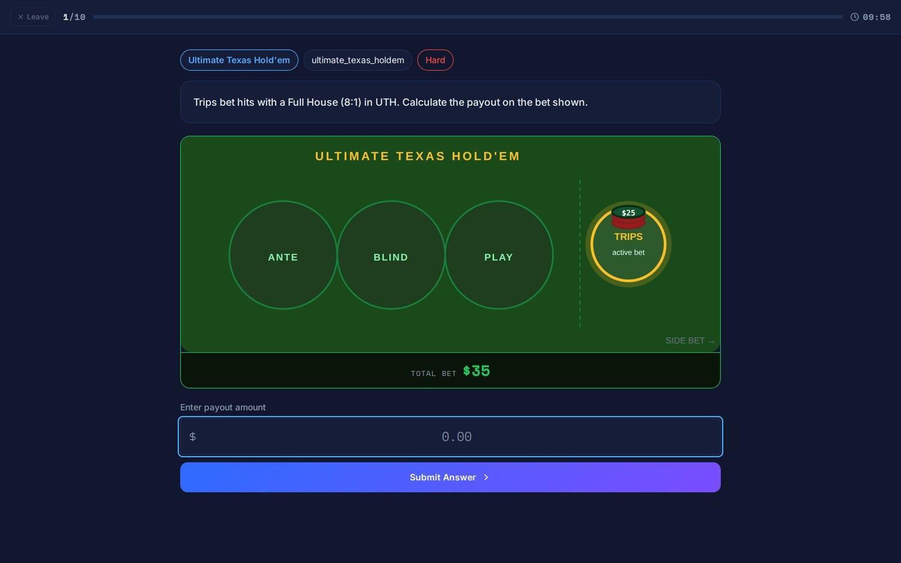
Figure 4.2 — A live payout drill. The chip stack sits on the table layout; read the wager, work out the payout, type the dollar amount, and select Submit Answer. The bar and timer at the top track your progress and the 10-minute cap.
Two question types
Payout drills — a bet is shown on the felt; you type the correct dollar payout. Validated to a 2-cent tolerance.
Multiple choice — rules, game-protection, and procedure scenarios; pick the correct option.
Good to know
Difficulty adapts to you (§5). The tag by the question shows Easy/Medium/Hard.
Roulette and Craps tables offer a 2D / 3D view toggle.
Leaving early marks the session abandoned — it scores 0 and doesn’t count.
4.3 Your Results
Finishing a session opens a full breakdown, so you learn from every miss.
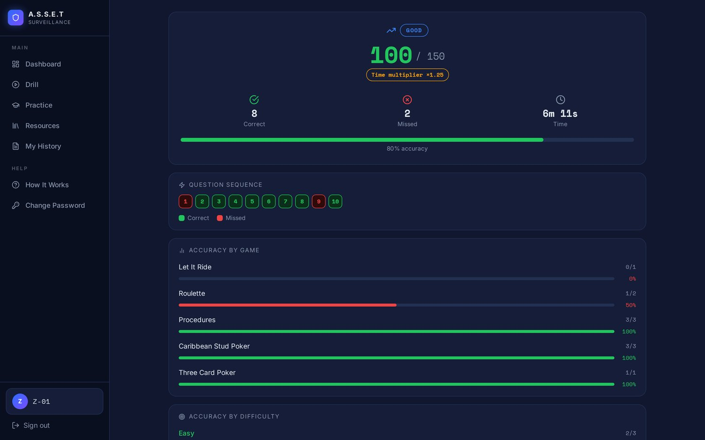
Figure 4.3 — The Results screen: final score out of 150, the time multiplier applied, correct/missed counts, a question-by-question sequence, and accuracy broken down by game and by difficulty. Scroll down to review each missed question with the correct answer and an explanation.
4.4 Practice Mode
Practice is unlimited and completely separate from your record — no score, no cooldown, no effect on your stats or difficulty. Choose a single game, Procedures, or Mixed — All Games.
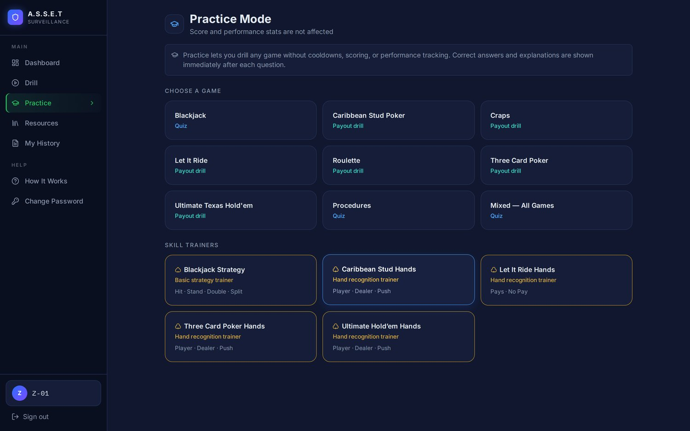
Figure 4.4 — The Practice picker. Choose a Game for endless questions in one game, or drop into a Skill Trainer (gold cards) for specialised drills.
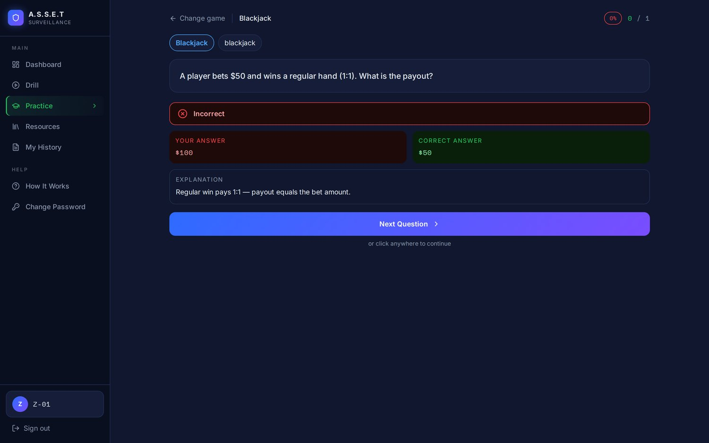
Figure 4.5 — In Practice, every answer is graded instantly: your answer vs. the correct answer, plus an explanation. Select Next Question (or click anywhere) to continue.
▸ Tip — practice with purpose
Use the accuracy rings on your Dashboard or the Weak Areas report to pick what to practise. Focused practice on an assigned game also earns credit toward any Remediation assignment (§7).
4.5 Skill Trainers
Beyond the games, dedicated trainers drill specific dealer skills — the Blackjack Strategy Trainer and Hand Recognition Trainers for Caribbean Stud, Ultimate Hold’em, Let It Ride, and Three Card Poker.
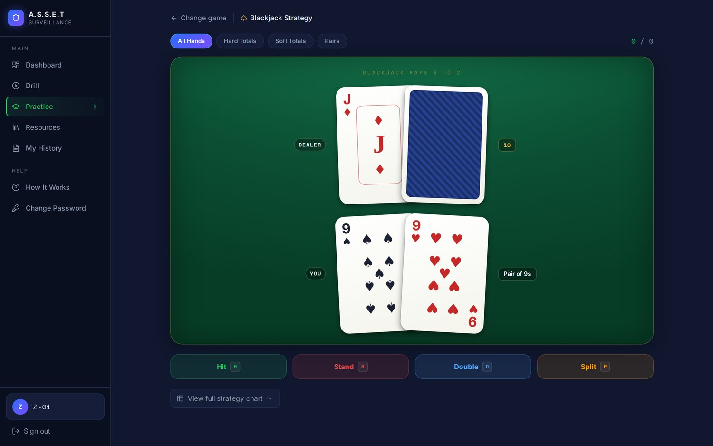
Figure 4.6 — The Blackjack Strategy Trainer. Call the correct play (Hit / Stand / Double / Split) for the dealt hand vs. the dealer up-card. Keyboard shortcuts HSDP speed you up; a wrong call shows the house rule and highlights the chart row. A full strategy chart is one click away.
4.6 Resources
Everything you need for reference lives here: rules & payout PDFs, video walkthroughs, and a payout calculator, organised by game.
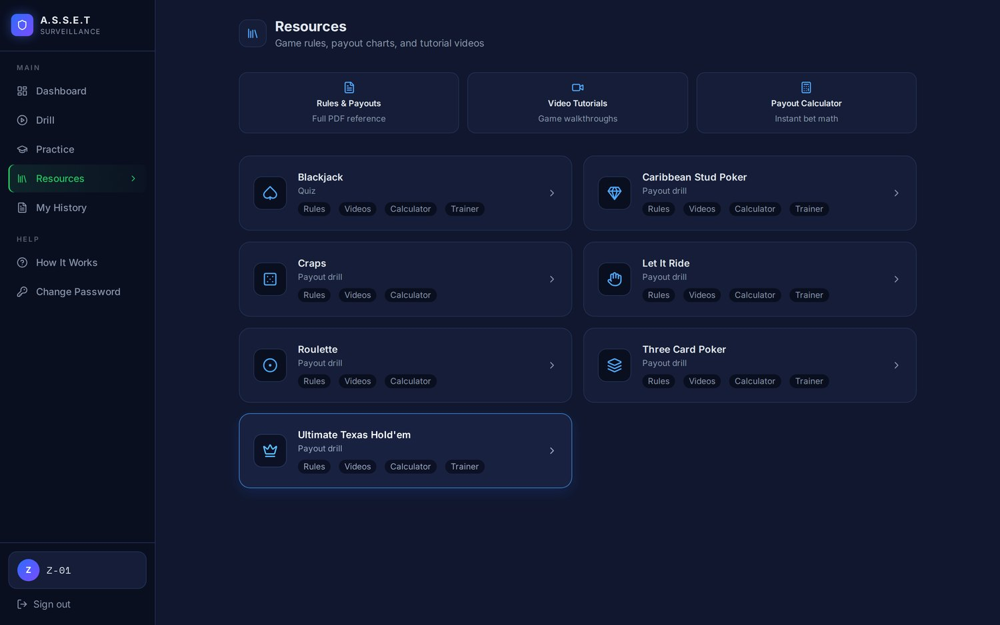
Figure 4.7 — The Resources library. Each game card links to its Rules, Videos, Calculator, and (where available) Trainer tabs.
4.7 My History
A running log of your sessions with dates, status, score, accuracy, and time. Your monthly progress, best score, and average sit at the top.
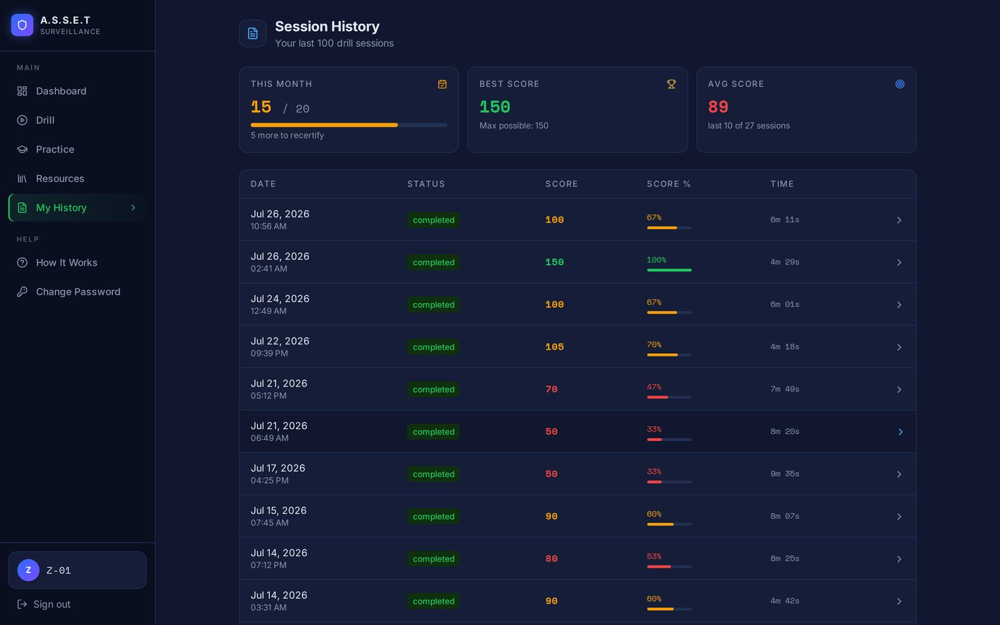
Figure 4.8 — Session History. Select any row to reopen that session’s full Results breakdown.
4.8 Pit Operations
Pit managers use the exact same portal — same drills, scoring, cooldown, and certification — with the sidebar simply labelled Pit Operations and the team leaderboard scoped to Pit staff.
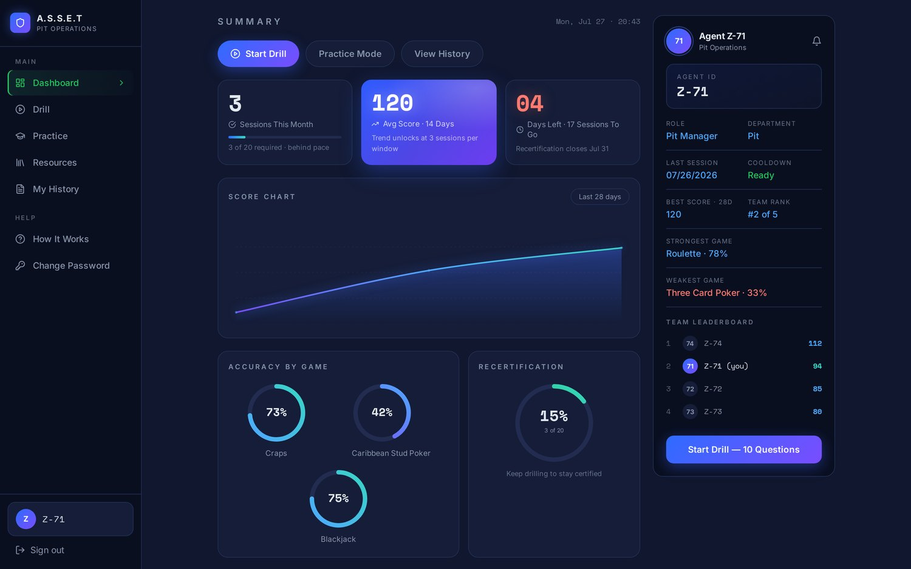
Figure 4.9 — A Pit Manager’s Dashboard. Identical layout to the agent view; note “PIT OPERATIONS” in the sidebar and the Pit-only leaderboard on the right.
5
How Scoring & Certification Work
A few simple rules govern every scored drill. Knowing them helps you plan your shift and hit your monthly target.
Scoring
10 points per correct answer (100 base for a perfect 10/10).
A speed multiplier is applied to the whole session at the end.
Finish time
Multiplier
≤ 5 minutes
× 1.5
5 – 7½ minutes
× 1.25
7½ – 10 minutes
× 1.0
Maximum score per session: 150 (10 correct × 10 × 1.5).
Session structure
10 questions, drawn across all games plus shared procedures.
10-minute cap per session.
Weaker games surface a little more often, so drills target your gaps.
Recently-seen questions are skipped to keep sessions fresh.
Cooldown & recertification
Rule
Detail
4-hour cooldown
After each completed session you must wait 4 hours before the next scored drill. The Drill link in the sidebar shows a live countdown. Practice has no cooldown.
20 sessions / month
Each drill-taker must complete 20 sessions in a calendar month to stay certified. Only completed sessions count.
Missed target
Falling short flags the account and notifies the department heads in-app.
Adaptive difficulty
Each game tracks your level (1 Easy → 3 Hard) independently:
3 correct in a row at your current level → step up.
2 wrong in a row → step down.
Bounded between Easy (1) and Hard (3). Practice never changes it.
▲ Important — abandoned sessions
Leaving a drill before you finish records it as abandoned: it scores 0 and does not count toward your 20. Finish the session — even a low score beats an abandon.
6
The Management Portal
Supervisors, shift managers, and department heads sign in the same way but land in the management portal. All views are scoped to your department and every list can be filtered and exported to Excel.
6.1 Team Dashboard
The command centre: team averages, who is behind on sessions, score-decay alerts, and a searchable roster with per-agent detail.
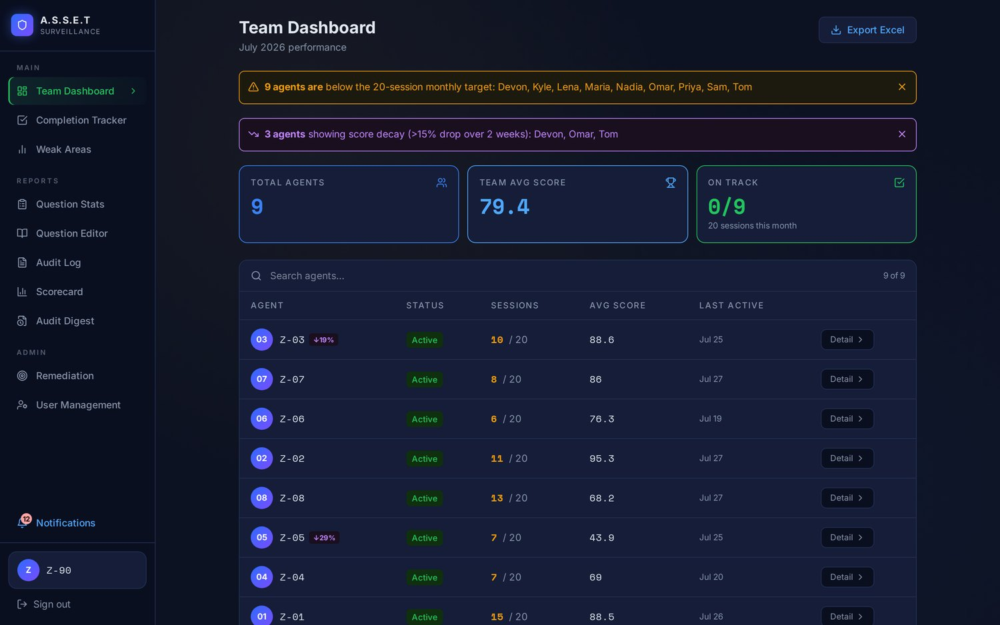
Figure 6.1 — Team Dashboard. Amber and purple banners flag agents below the monthly target or showing a score drop. Each row links to that agent’s Detail page; Export Excel is top-right.
6.2 Agent Detail
Drill into one person: score trend, per-game averages, and full session history including IP/device for each sitting.
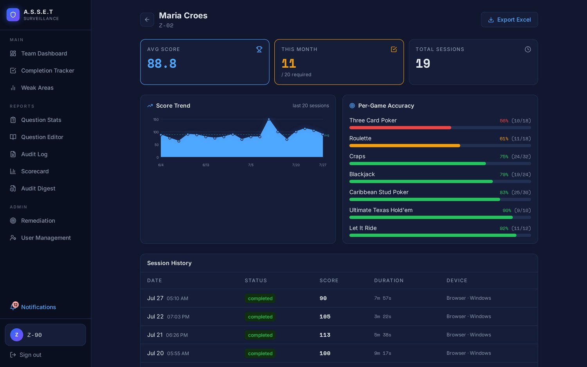
Figure 6.2 — An individual Agent Detail page — the complete performance picture for one team member.
6.3 Completion Tracker
Certification at a glance: who has hit 20 sessions this month and who hasn’t, with automated flagging. You can record exceptions (e.g., approved leave).
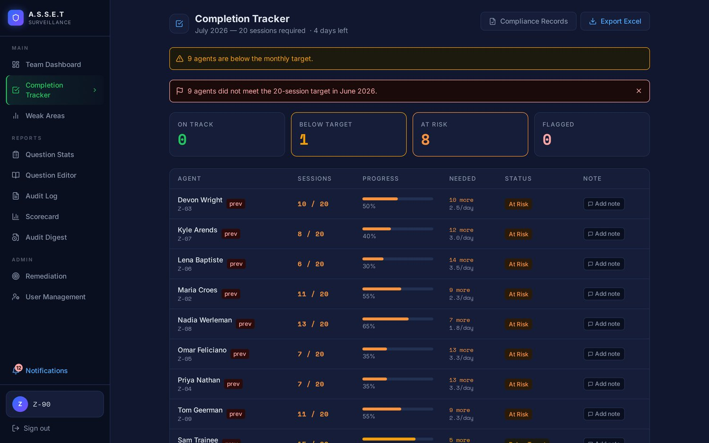
Figure 6.3 — The Completion Tracker enforces the 20-session monthly recertification rule across the department.
6.4 Weak Areas
Where the team struggles — accuracy by game and the most-failed questions, filterable by date range, agent, and game.
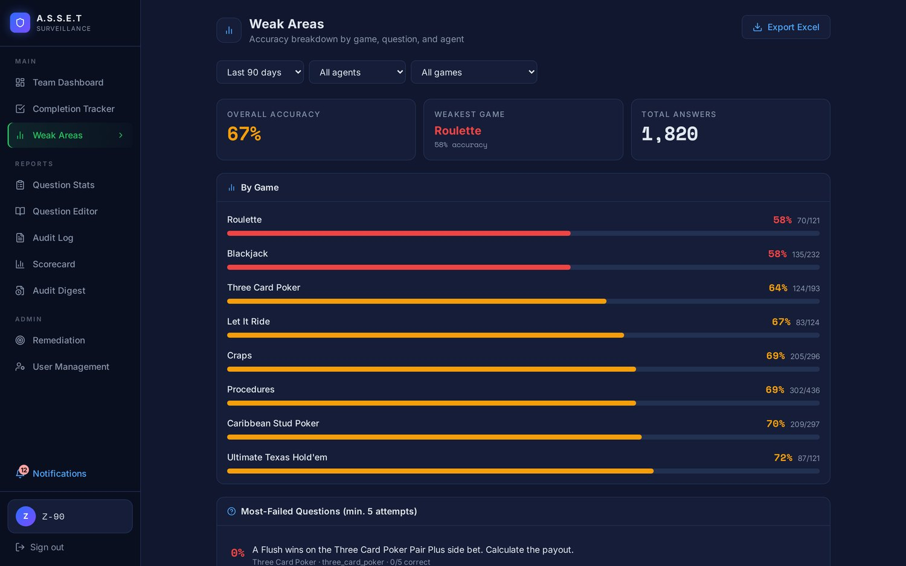
Figure 6.4 — Weak Areas. Use it to steer coaching and to decide what to assign as Remediation.
6.5 Question Stats & 6.6 Question Editor
Question Stats shows how each question is performing (times shown, accuracy) for your department. The Question Editor lets supervisors and heads add or edit questions in the shared pool.
A game needs at least 30 active questions to be considered ready; the portal warns when a game drops below that line.
6.7 Audit Log
An append-only record of significant actions — logins, completed sessions, question edits, account changes — for the department. Agents have no access.
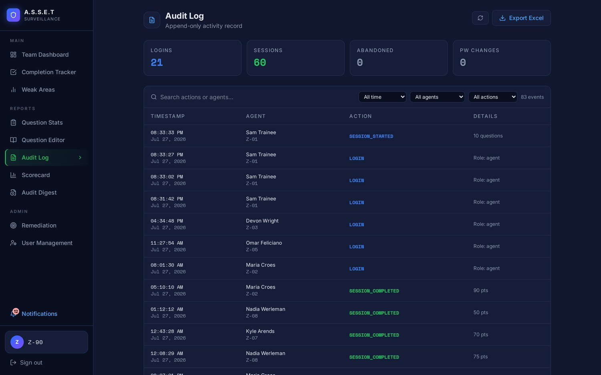
Figure 6.7 — The Audit Log. Filterable and exportable; the newest 500 events are shown (use the Audit Digest for exact period totals).
6.8 Notifications
The sidebar bell collects the alerts that need attention — agents who missed last month’s target and agents whose scores are decaying.
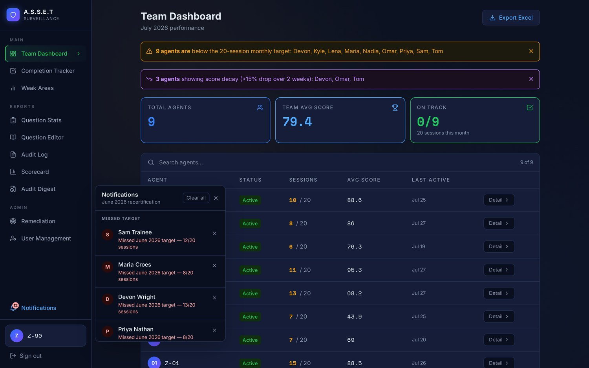
Figure 6.8 — The Notifications panel. Dismiss individually or clear all; the badge shows the outstanding count.
7
Department Heads — Extra Tools
The Director (Surveillance) and Casino Manager (Pit) see four additional pages under Reports and Admin. Supervisors and shift managers do not.
7.1 Scorecard
Month-over-month department KPIs — average score, sessions, active drill-takers, recert-compliance rate, and accuracy — with trend arrows, sparklines, and a per-game accuracy matrix.
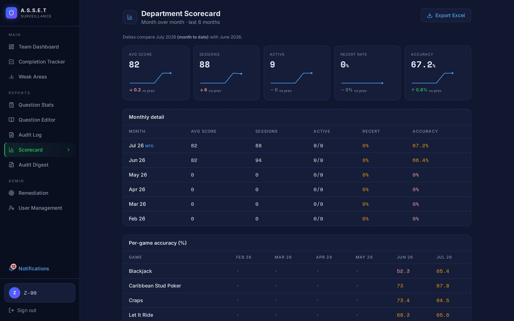
Figure 7.1 — The Department Scorecard. The current month is marked MTD (month-to-date); deltas compare it to the previous month.
7.2 Audit Digest
A period rollup (24h / 7d / 30d / 90d) of department activity: totals by action, most-active users, notable/security events, and a failed-login summary — with exact counts that the 500-row Audit Log can’t always show.
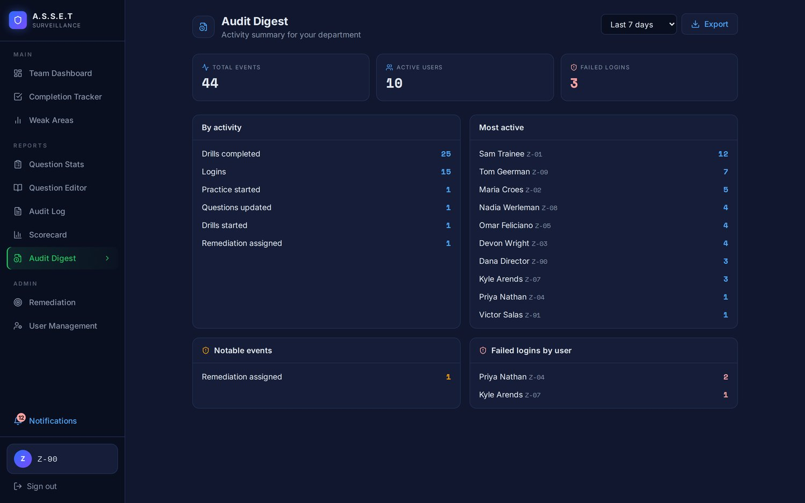
Figure 7.2 — The Audit Digest. A fast health check on department activity and security.
7.3 Remediation
Assign a drill-taker a focus — a specific game or Procedures — with a note and a due date. The assignment appears on that person’s Dashboard, and progress is tracked automatically.
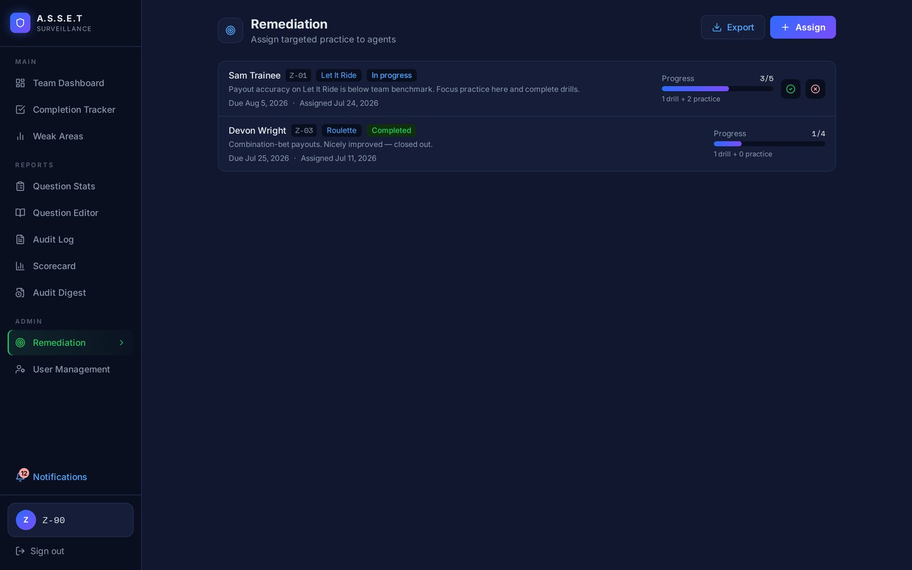
Figure 7.3 — Remediation assignments with live progress. Each shows a drills + practice split; the assign form pre-suggests each agent’s weakest game.
◆ How an assignment completes
Progress counts qualifying drills plus practice credits (every 10 focused-practice questions = 1 credit). It auto-completes when the target is reached and at least one real drill has happened — practice alone can never certify completion. A head can also mark it complete or cancel it by hand.
7.4 User Management
Heads manage their own department’s accounts end-to-end — no IT ticket required.
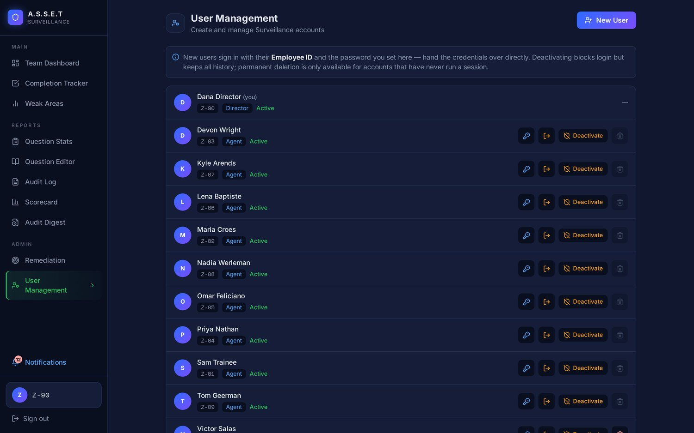
Figure 7.4 — User Management. Per-user actions: reset password, force logout, deactivate/reactivate, and (for accounts with no history) permanent delete.
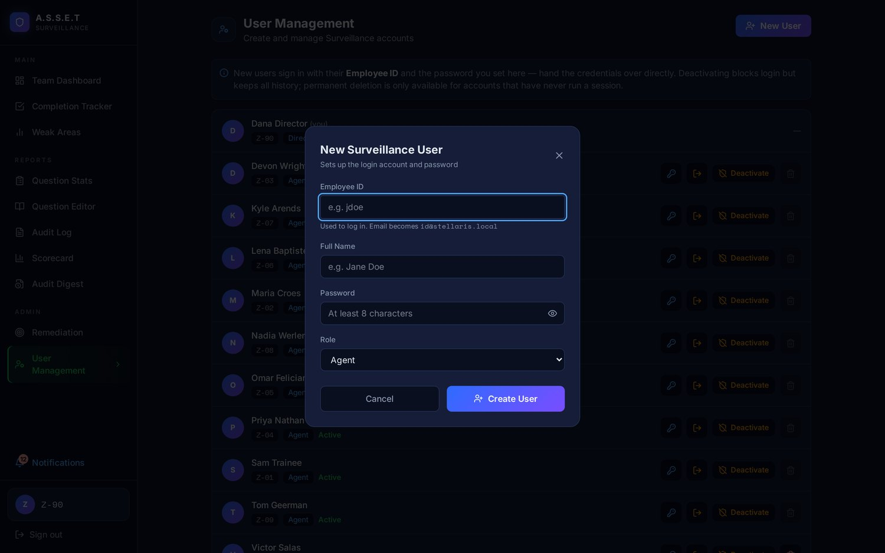
Figure 7.5 — Creating a user. Enter an Employee ID, name, password, and role; the login email is derived automatically as id@stellaris.local. Hand the credentials over directly.
Action
What it does
Create user
Adds an account in your department with the role you choose.
Reset password
Sets a new password directly — the model here is “hand credentials over in person”.
Force logout
Ends the user’s active session within about a minute (temporary).
Deactivate / Reactivate
The reversible block that preserves all history. A deactivated user cannot log in.
Delete permanently
Only offered for accounts that have never run a session; otherwise the app deactivates instead.
▲ Important
Every account action is written to the Audit Log, and heads can only act on their own department — never on themselves or the other head. Passwords are never recorded in the log.
8
Tips, Shortcuts & Excel Exports
Navigation
The left sidebar is always your map; the highlighted item is where you are. On a phone, tap the ☰ menu icon.
Your Employee ID and Sign out live at the bottom of the sidebar.
In the drill portal the Drill link is greyed out during cooldown and shows the remaining time.
Keyboard shortcuts (Skill Trainers)
Blackjack Strategy: H Hit · S Stand · D Double · P Split. Hand trainers use the on-screen option keys shown under each hand.
Excel exports (management)
The Export Excel button appears on the Team Dashboard, Agent Detail, Completion, Weak Areas, Question Stats, Audit Log, Scorecard, Audit Digest, and Remediation.
Filter first — by date range, agent, and game where offered — then export; the file reflects your filters.
▸ Tips worth keeping
Beat the clock, but don’t rush. The ×1.5 multiplier needs a sub-5-minute finish — valuable only if you stay accurate.
Warm up in Practice. It never touches your score, cooldown, or difficulty — the perfect place to shake off rust before a scored drill.
Finish every drill. Abandoned sessions score 0 and don’t count toward your 20.
Read the misses. Every wrong answer comes with the correct answer and an explanation — the fastest way to improve.
9
Roles & Access — Quick Reference
Capability
Agent / Pit Mgr
Supervisor / Shift Mgr
Director / Casino Mgr
Run drills, practice, trainers
✓
—
—
See own history & certification
✓
✓ (team)
✓ (team)
Team Dashboard, Completion, Weak Areas
—
✓
✓
Question Stats, Question Editor, Audit Log
—
✓
✓
Scorecard, Audit Digest
—
—
✓
Remediation (assign focus)
receives
—
✓
User Management (accounts, passwords)
—
—
✓
All access is confined to your own department (Surveillance or Pit) by the department wall. Only the two department heads manage accounts; the platform administrator creates the heads themselves.
10
Troubleshooting & FAQ
Question
Answer
I forgot my password.
There’s no self-service reset. Ask your supervisor or department head — they can set a new one for you immediately.
My account is locked.
Five failed logins in 15 minutes triggers a temporary lock. Wait for the window to clear, or ask a head.
The Drill button is greyed out.
You’re in the 4-hour cooldown after a completed session. The countdown is on the button. Practice is always available.
I was signed out unexpectedly.
Either 30 minutes of inactivity, or a head force-logged the session. Just sign back in.
Does Practice affect my score or ranking?
No. Practice writes nothing to your record — no score, cooldown, or difficulty change.
My session says “abandoned”.
It was left before finishing. It scores 0 and doesn’t count. Always complete the 10 questions.
Why don’t I see the other department?
By design. Surveillance and Pit are walled off from each other’s people and results.
Can I use my phone?
Yes — the app is fully responsive. On payout drills the keyboard opens only when you tap the amount field, so the table stays visible.